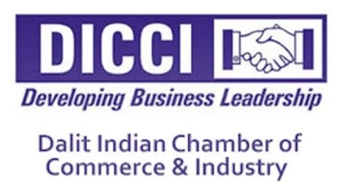
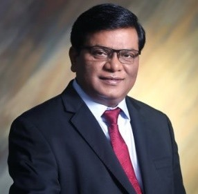
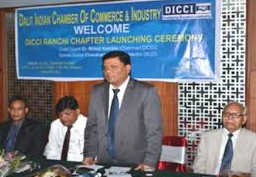
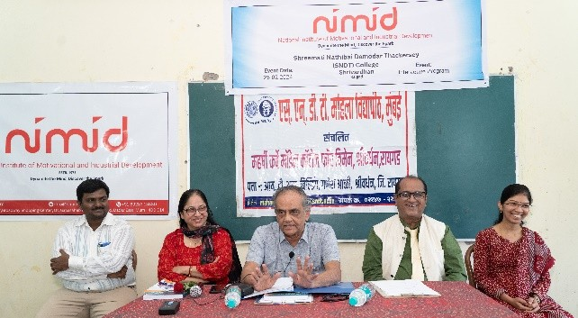
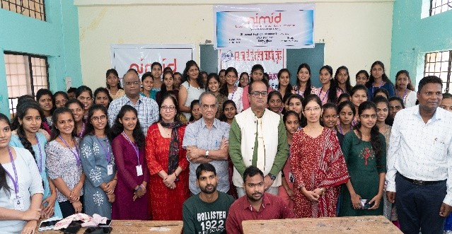
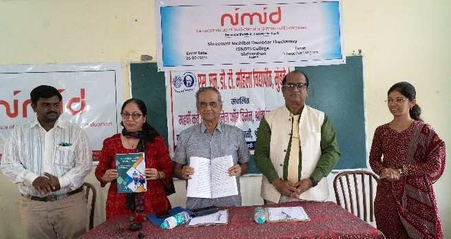

विशेष व्यवस्थापन (हेराल्ड गिनीन) बदलणे
‘आव्हान’च्या २०२३ मधील अंकात MMCLचे व्यवस्थापक संचालक यांचा “ओवर टाईम” हा लेख, नंतर श्री नारायण मूर्ती यांनी तरुणांनी
किमान ७० तास काम करायला हवं, अस जे विधान केल त्यावर दैनिक ‘लोकसत्ता’चे संपादक श्री गिरीश कुबेर यांनी नारायण “वाक्बळी”!
हा अग्रलेख छापला होता या विषयावर आव्हानला बरीच पत्र आली. त्यावर श्री अनिल नेवाळकर यांच्या खुलासा ही छापला होता. काळ+काम+वेग
हा शाळेत शिकवलेल्या विषयाला खूप कंगोरे असतात. हे स्वत:चा व्यवसाय किंवा उद्योग सुरु केल्यावर जास्त वेगाने कळतात. या संबधात वेगळा
लेख आव्हान छापत आहोत. लेखक आहेत हेरॉल्ड गिनीन आयटीटी कॉर्पोरेशनचे अध्यक्ष म्हणून येथे काम केले ते प्रसिद्ध अमेरिकन व्यवस्थापक होते.
आमच्या कंपनीतील इतर कर्मचा-यांप्रमाणेच मी जास्त वेळ अंग मोडून काम करीत असे. त्यांना ते कळत होते. दररोज मी चौदा सोळा तास काम
करीत असे, युरोपचा दौरा करीत असे. कामाचे कागद सुटटीच्या दिवसात घरी नेत असे, माझ्या कर्मचाऱ्यांसमोर आदर्श ठेवावा या हेतूने मी हे सर्व
करत नव्हतो. मला कार्यकुशल व्हायचे होते. त्यासाठी सगळी धडपड।
जास्त तास काम करण्याचे मूल्य काय, याची तर्क-संगती मला पूर्णाशाने समजलेली आहे. विचार करा, दोन व्यक्ती, दोघांच्या बुध्दिमत्तेत आणि क्षमतेत
फारसा फरक नाही, एकजण दहा वर्षे दिवसाला आठ तास याप्रमाणे काम करतो. दुसरा दिवसाला बारा तास याप्रमाणे दहा वर्षे काम करतो. दहा वर्षांनंतर
पहिल्याच्या गाठीला दहा वर्षांचा अनुभव असेल आणि दुसऱ्याच्या गाठी पंधरा वर्षांचा तुम्ही कुणाची नेमणूक कराल? दोन स्पर्धक उद्योग. व्यवस्थापक घ्या,
किंवा दोन प्रमुख अधिकारी, एक दिवसांमध्ये आठ तास काम करतो तर दुसरा दहा बारा तास, कोण जास्त यशस्वी होईल?
कोठल्याही सुसंघटित कंपनीत सर्व कर्मचान्यांच्या लक्षात येईल अशी समतोलाची जाणीव असणे अगत्याचे आहे. तुम्हाला आपल्या पदरी उत्तम प्रतीचे कर्मचारी
असावे असे वाटत असेल, त्यांनी सर्वसाधारण व्यक्तींपेक्षा अधिक काहीतरी करून दाखवावे अशी तुमची अपेक्षा असेल तर अगदी त्यांना वाटते त्यापेक्षाही अधिक
त्यांची किंमत त्या प्रमाणात चुकती करणे हे ओघाने आलेच. आमच्या कंपनीत अगदी पहिली गोष्ट आम्ही केली ती म्हणून उद्योग धंद्यातील ज्या मिळतील त्या उत्कृष्ट
व्यक्तींच्या नेमणुका आमच्या इथे करण्याचा आम्ही सपाटा लावला. मला रुबाबदार दिसणाऱ्या व्यक्ति नको होत्या. मिठास बोलून आपल्या आकर्षक चेहेल्याने दुसऱ्यावर
छाप पाडणाऱ्या व वाड-वडिलांच्या पुण्याईवर आगेकूच करणाऱ्या व्यक्तीसुध्दा मला टाळायच्या होत्या, मला प्रज्ञावंत व्यक्तीही नको होत्या. आमच्या सारख्या सामान्य
लोकांशी जमवून घेणे त्यांना कठीण जाते. मला वेगळे लोक हवे होते. सूक्ष्म, अनुभवी ज्यांना काहीतरी करुन दाखवून आपल्या आयुष्याचे सार्थक करायचे आहे असे
आणि ते मिळविण्यासाठी कितीही परिश्रम करण्याची तयारी असलेले. अर्थातच आम्हाला बुध्दिमान, जाणकार व अनुभवी लोक हवे होते. परंतु अशी गुणवत्ता असलेल्यां
मधून माझ्या कामाबाबतच्या उत्साहात जे सहभागी होण्याची शक्यता होती. असे लोक आम्ही निवडत असू.
थोडयाच वर्षात आमच्या कंपनीसमूहाच्या कार्याची घोडदौड काही कारणाने न मानवलेल्या कर्मचाऱ्यांनी आम्हाला सोडचिट्टी दिली. काहींना आम्हीच तसं सुचवलं परंतु तिशीतले
काही तरुण कंपनी समूहातील काही कंपन्यांच्या प्रमुखपदी विराजमान झाले चाळिशीतील काहीजण एकाहून अधिक कंपन्यांचे प्रमुख म्हणून काम पाहू लागले. कालांतराने आमच्या
व्यवस्थापन संच स्थिरावला. मग टीकाकार म्हणू लागले की मी वाजवीपेक्षा जास्त पगार देतो म्हणून लोक टिकले, हे खरे नाही, अनुभवी आणि उत्तम व्यवस्थापन अधिकारी
व्यक्तींची आज जाण आहे.
आम्ही देत होतो त्यापेक्षा जास्त पगार आणि इतर सुविधा त्यांना कोठेही मिळाल्या असत्या ते राहिले याचे कारण ते आमच्या कंपनीसमूहाच्या वातावरणात सुखी होते. आम्ही सारेच अविरत
परिश्रम घेत असू; अनेक आव्हानांना आम्ही सामोरे जात असू त्याचा भरपूर मोबदलाही आम्हांला मिळत असे. आमचा विकास अव्याहत चालू राहिला. सुस्थिरता आणि निष्ठा ह्या दोन बाबीही
ते आमच्याकडे टिकून रहाण्यास कारणीभूत झाल्या.
पहिल्या काही वर्षात आमच्या कंपनीसमूहाची ज्यांनी रजा घेतली, ती त्यांना खडतर परिश्रमाचा नव्याने निर्माण करण्यात आलेला आवेग न झेपल्यामुळे!
मागाहून मात्र आम्हांला सोडून जाणाऱ्यांपैकी बऱ्याच अधिकाऱ्यांना खूप चांगल्या मागण्या आल्या. मी त्यांना माझ्या सदिच्छा दिल्या. कुठल्याही अधिकाऱ्याला असाधारण अशी व्यक्तिगत
संधी मिळत असेल तर त्याच्या आड येणे अन्यायकारक आहे असे मला वाटते कारण अशा वागण्याने कालांतराने मी त्या अधिकाऱ्याचा विश्वास व निष्ठा गमावून बसेन. आपल्या संचातील
एखादा गुणी अधिकारी गमावणे कोठल्याही प्रमुख संचालकाला आवडत नाही. परंतु माझ्या मते अपुऱ्या वेतनामुळे अधिकारी गमवावा लागणे हे जास्त क्लेशकारक!
योग्य माणसे आपापल्या जागी स्थिरावल्यावर कंपनीचे वातावरण कसे असते, यावर कंपनीचे यशापयश अवलंबून राहाते. वातावरणाचे नियंत्रण प्रमुख संचालकाच्या हाती असते.
तापमान तो ठरवतो. हवेच्या गुणवत्तेची नाही. अनुभवाने मी एवढे सांगू शकतो की, कंपनीचे व्यक्तिमत्त्व प्रमुख संचालक घडवतो त्याच्या हाताखाली काम करणारी माणसे त्याच्या हुकुमाचे पालन करतात.
त्याच्या कार्यपध्दतीचे अनुकरण करण्याकडे त्यांचा कल असतो तो काय करतो व कसे करतो याची पुनरावृत्ति सर्व थरावर होत असते.
मागच्या अंकात मी म्हटले होते की अनेक कंपन्या या फाजील पैसे असल्याने संकटात येतात.
१) बहुधा लघु-मध्यम उद्योगाला सुरुवातीची कर्जे ही कुठल्यातरी मालमत्ता विकत घेण्यासाठी दिलेली असतात. या मालमत्तेची कागदपत्र
सादर केल्यावर पैसे मिळतात. पण उद्योजक ज्यांच्याकडून मालमत्ता खरेदी केली आहे त्यांना सर्व पैसे देत नाही व अशा तऱ्हेने बँकेत रक्कम राहते.
२) गिऱ्हाईकाकडून आलेले पैसे धनकोला देण्याऐवजी स्वखर्चासाठी वापरले जाणे (याचे हमखास कारण नवउद्योजकांच्या अनेक इच्छा पैशाअभावी अपुऱ्या
राहिलेल्या असल्याने; पैसे हातात आले की त्यासाठी खर्च करणाऱ्याकडे त्याचा कल असतो. (उदा. घर/गाडी घेणे व त्याचे down payment
करण्यासाठी मोठी रक्कम भरणे.)
३) एखाद्या नवीन यंत्रसामग्रीत पैसे घातले जातात. ती रक्कम मोठी असते. त्यासाठी जर बँकेने पुरेसे पैसे दिले नसतील तर उद्योजक धनकोचे पैसे त्या दिशेला
वळवतो. अर्थात् या प्रकारच्या गुंतवणुकीतून धनकोचे सर्व पैसे देता येतील एवढे पैसे मिळायला अनेक वर्षाचा अवधी लागतो. परंतु मालाच्या धनकोलो वा शासनाची देणी वेळेत
देणे जरूर असते पण उद्योजकाने माल विकून आलेली रक्कम धनकोला द्यायच्या ऐवजी यंत्र सामुग्रीत घातलेली असत.
तुम्ही असे केले आहे का हे ओळखण्याची सोपी खाली देत आहे.
उदाहरणार्थ आपण अ-ब-क
अ) येणे पैसे रुपये
१) तुमचा विकाऊ स्टॉक
२) ऋणकाकडून येणारी रक्कम
३) बँकेमधली रोकड
४) मागितल्यावर मिळतील, असे असलेले किरकोळ पैसे span
‘अ’ची बेरीज
ब) देणे पैसे
१) धनकोला द्यायचे पैसे
२) या महिन्यात कोणालाही काही कारणासाठी (उदा. मासिकह पगार, महिन्याचा पगार, भाडे, टेलिफोन) द्यायचे पैसे (केव्हाही मागितले जातील.)>
‘ब’ची बेरीज
जर, (क) अ - ब ही रक्कम अधिक असेल तर तुम्ही आपले देणे भागवू शकता (जर ऋणकोला पैसे वेळेवर देणारा असेल तर)
जर, क (अ - ब) हे उणे असेल तर तुम्हाला रोजच्या पैशाची अडचण येत असली पाहिजे; कारण तुम्ही धनकोची रक्कम "दीर्घ मुदती” साठी गुंतवली असावी.
२) ही उणे (अ-ब) रक्कम कुठे गेली कळण्यासाठी दुसरे तक्ता देत आहे.
१) मालमत्ता, यंत्रसामुग्रीत गुंतवलेले पैसे
२) उणे बँकेचे या वर्षात न देण्याचे हप्ते ही वळवलेली रक्कम
अगदी आपल्या रोजच्या जिवनात (विशेषतः सध्याच्या तुरुण मुलात) दिसून येणारी गोष्ट म्हणजे बँक आपल्याला घर घेण्यासाठी वा गाडी घेण्यासाठी पैसे देते.
अर्थात् आपल्या हातात पैसे येतात पण आपले Income (आवक पगार अर्थात् सर्व रक्कम एकदम परत देण्यापुरता नसतो.) म्हणजे हातात पैसे आहेत
पण profit नाही. आपल्याला आठवत असेल २०२३ मध्ये जगात, २००७-२००९ “Subprime Crisis” ने ग्रासले होते. त्याचा गाभा हाच होता. लोकांच्या
हातात त्यांच्या पगाराच्या कित्येक पटीने हातात पैसे दिले गेले. त्या लोकांनी ते निरर्थक गोष्टीसाठी वापरले. माझ्या एका नातेवाईकाने घरच्या पडद्यासाठी कर्ज घेतले होते!
आपल्याकडेही घर सजावटीसाठी पैसे दिले जातात हे खरेतर आपल्या उत्पनापेक्षा जास्त हातात खेळत असल्याने आपण कॅश आहे पण profit नाहीच्या trapमध्ये सापडतो.
बँकनी दिलेल्या कर्जाऊ पैशांनी घेतलेल्या Assetsची किंमत विकून मिळणारी नसेत. अशा वेळी काय करावे.
यात ३ मार्ग दिसतात.
१) दीर्घ मुदतीनंतर पैसे देणारी मालमत्ता विकली (Subprime मध्ये हाच धोका असतो.) (ही शक्यता नवीन उद्योगाबद्दल जवळ जवळ नाहीच.)
२) दीर्घ मालमत्तेसाठी दीर्घ मुदतीचा ऋण घेणे (इथे खूप अडचणी येतात. एक दीर्घ मुदतीचे ऋण फेडता येईल का? व दुसरे अनेक उद्योजक बँकेकडून खूपच कमी ऋण घेतल्यानंतर
ते वाढवून मिळण्याचा process फार किचकट असते.)
३) तिसरा: भागीदार घेणे (हा उपाय उद्योजकांना संकट वाटतो.)
४) तेव्हा आपल्या उद्योगाचा ताळेबंद पाहा व काय पटते ते सांगा.
अर्थात् निमिड केव्हाही सल्ला देईल पुढच्या अंकात profit आहे पण cash नाही.
नोकरी मागणाऱ्या पेक्षा नोकरी देणारे व्हा
" नोकरी मागणाऱ्या पेक्षा नोकरी देणारे व्हा " हे उद्गार आहेत. पद्मश्री पुरस्काराने सन्मानित करण्यात आलेल्या मिलिंद कांबळे यांचे.
दलित इंडियन चेंबर ऑफ कॉमर्स ऑफ इंडस्ट्रीज (डिक्की) या संस्थेचे संस्थापक चेअरमन असणाऱ्या मिलिंद कांबळे यांनी मागील वीस
वर्षांत दलित समुहातील उद्योजकांचे संघटन करून उद्योग व आर्थिक क्षेत्रात वेगळी ओळख निर्माण केली आहे. आज देशभरात डिक्की चे
नेटवर्क निर्माण झाले आहे.

मिलिंद कांबळे यांचे मूळ गाव लातूर जिल्ह्यातील चोबळी. नांदेड येथील गव्हर्नमेंट तंत्रनिकेतन मधून त्यांनी सिव्हिल इंजिनियर ही पदवी १९८७
साली प्राप्त केली. ८७ ते ९० या काळात अभाविप या संघटनेचे पूर्ण वेळ कार्यकर्ता म्हणून काम केले आणि १९९० साली मिलिंद कांबळे पुण्यात
येऊन दाखल झाले.आपण शासकीय नोकरी करायची नाही. असा निर्धार करून त्यांनी पुणे येथे बांधकाम क्षेत्रात स्वतःचा ठसा उमटवला.
पुण्यात छोटी छोटी कामे करताना मुंबई पुणे एक्सप्रेस वे च्या काही टप्प्याची निर्मिती करण्याची संधी मिलिंद कांबळे यांना मिळाली.
या संधी मुळे अनुभव आणि आर्थिक स्थैर्य प्राप्त झाले. वेगवेगळ्या प्रकारच्या कामाचा अनुभव गाठीशी आला. उद्योगात यशस्वी होताना मिलिंद कांबळे यांनी
आपले सामाजिक भान जपले. या काळात खाजगी क्षेत्रात आरक्षण लागू व्हावे अशी जोरकस मागणी पुढे येत होती. तर खाजगी क्षेत्रातील उद्योगपती आम्ही जात
नव्हे तर गुणवत्ता महत्त्वाची मानतो अशी भूमिका मांडू लागले होते. या पार्श्वभूमीवर मिलिंद कांबळेनी स्वतः बांधकाम उद्योगात मोठी झेप घेण्याची तयारी केली.
२००५ साली फॉरचून कन्स्ट्रक्शनचा शुभारंभ मिलिंद कांबळे यांनी केला. मोठ मोठे प्रकल्प सुरू केले. खाजगी क्षेत्रातील आरक्षणाची आहे रे... आणि नाही रे....
असा दोन्ही बाजूंनी हा विषय तापवला जात होता. याच काळात समन्वयाची भूमिका घेऊन हा प्रश्न सोडवण्यासाठी मिलिंद कांबळे यांनी पुढाकार घेतला आणि डिक्की
(दलित इंडियन चेंबर ऑफ कॉमर्स अँड इंडस्ट्री) चा जन्म झाला. दलित समाजाचा विकास व्हायचा असेल तर उद्योगविश्व वाढले पाहिजे.

दलित समाजातील उद्योजकांना भारतीय उद्योगाच्या मुख्य प्रवाहात जोडले पाहिजे ही भूमिका घेऊन मिलिंद कांबळे काम करू लागले. ते आपल्या संस्थेची
भूमिका मांडताना म्हणतात, "दलितांचे प्रश्न हे दुहेरी आहेत. एक तर दलित असल्यामुळे अस्पृश्यतेचे चटके त्यांनी सोसले आहेत. अजूनही हा समाज असाह्य,
वंचित, गरीब आहे. त्यांच्यात आत्मभाव जागृत करून त्यांना उभे करावे लागेल आणि दुसरी बाजू म्हणजे, सर्व पारंपरिक व्यवसाय हे दलित समाजाकडे होते.
कला होती, कौशल्य होते, पण जागतिकीकरणाच्या रेट्यामुळे हे पारंपरिक व्यवसाय आज अस्तंगत झाले आहेत. या दुहेरी समस्येचा विचार करता प्रचंड कष्ट व
उद्योगशीलता जपण्यास दुसरा पर्याय नाही. म्हणून मी डिक्कीची स्थापना केली. १४ एप्रिल २००५ रोजी पू. भारतरत्न डॉ बाबासाहेब आंबेडकर यांच्या जयंतीच्या
दिवशी मिलिंद कांबळे यांनी डिक्की ची स्थापना केली.
दलित युवकांनी क्षेत्रात यावे. व उद्योग विश्वात उद्योजक म्हणून आपला ठसा उमटविला. देशाच्या औद्योगिक प्रगतीत मोलाची भर घालावी त्याच बरोबर इतर समाज
बांधवांनाही या उद्योग मार्गावर पुढे येण्यास मदत करावी. नव तरुणांमध्ये उद्योजकीय प्रेरणा जागृत व्हाव्या. असे वातावरण निर्माण करण्यासाठी डिक्की कार्यरत आहे.
दलित समुहातील उद्योजकांचा औद्योगिक विश्वाला परिचय व्हावा या उद्देशाने डिक्की च्या माध्यमातून २०१० साली पहिला दीप एक्स्पो पुणे येथे आयोजित करण्यात आला.
या एक्स्पो मध्ये उद्योजकांचे एकत्रित व त्यांच्या उत्पादनाचे प्रदर्शन करण्यात आले. या एक्स्पो ला अनेक मान्यवरांनी भेटी दिल्या. पुढील काळात मुंबई, दिल्ली, बंगलोर येथे
डिक्कीच्या वतीने एक्स्पो आयोजित करण्यात आले होते.
दलित तरुणांनी उद्योग करावा हे नुसते सांगून उपयोगाचे नाही तर त्याकरिता एक इकोसिस्टम तयार करणे आवश्यक आहे. हे जाणून ३M चा विचार केला गेला. Money,
Market, Mentor. मुद्रा, stanart dup India वेंचर कैपिटल फंड या योजनांमधून ५००००ते १५००००० पर्यंत भांडवल कर्जाची सोय केली. एससीएसटी उद्योजकांकडून
सरकारच्या सर्व मंत्रालय आणि विभागांनी वस्तू खरेदी करण्याचे धोरण २०१२ पासून अमलात आणले. ४टक्के SC\ST आणि ३टक्के महिलांसाठी या धोरणातून खरेदी केली जाते.
एक आश्वासक मार्केट खुले झाले. तसेच उद्योजकांना विविध प्रकारचे मार्गदर्शन देशभरात डिक्की मार्फत केले जाते.

डॉ. बाबासाहेब आंबेडकर हे मिलिंद कांबळे यांचे प्रेरणा स्थान असून डॉ बाबासाहेब आंबेडकरांवरील पहिली वेबसाइट त्यांनी निर्माण केली होती व तिचा अटलबिहारी वाजपेयी यांच्या
हस्ते शुभारंभ झाला होता. २०१३ मध्ये भारत सरकारने मिलिंद कांबळे यांना पद्मश्री पुरस्काराने सन्मानित केले. सध्या ते जम्मू काश्मीरमधील आय.आय.एमचे बोर्ड ऑफ गव्हर्नर चे
चेअरमन आहेत. भारतात पार पडलेल्या G20 परिषदे अंतर्गत B20 ( business 20) या राष्ट्रीय स्तरावर गठित केलेल्या समितीचे मिलिंद कांबळे सदस्य होते.
आता आतंरराष्ट्रीय स्तरावर डिक्की चे काम उभे राहिले.
निमिड कार्यशाळा
निमिडच्या श्रीवर्धन येथील कार्यक्रमाचा वृत्तांत
उद्योजकता विकसनाचे कार्य हा निमिडच्या निर्मितीमागचा मुख्य हेतू आहे. जेव्हा निमिडची स्थापना झाली तेव्हा उद्योजकतेसाठी योग्य व्यक्ती या, ज्यांनी एका उद्योगामध्ये दहा-बारा वर्ष काम केले आहे,
ज्यांना त्या उद्योगाला आवश्यक असणाऱ्या सर्व प्रकारच्या कच्च्या मालाची माहिती असते, त्या उद्योगाच्या उत्पादनापाठच्या सर्व प्रक्रिया ज्यांना माहिती आहेत, त्या उत्पादनांच्या विक्रीसाठी
लागणाऱ्या सर्व प्रणालींची माहिती आहे, अशा इत्यंभूत माहिती असणाऱ्या असाव्यात, असे गृहितक होते. या मागचे कारण असे होते की एखाद्या उद्योगाशी निगडीत माहितगार व्यक्ती त्याच्या
साहाय्याने स्वतःचा उद्योग उभारण्याची जास्त शक्यता असते. मात्र या धारणेमध्ये गेल्या काही वर्षांपासून बदल झालेला दिसतो. वाढते जागतिकीकरण आणि मुक्त अर्थव्यवस्थेचा परिणाम म्हणून
उद्योजकतेकडे मोठ्या प्रमाणावर तरुणाई आकर्षित होताना दिसत आहे. सध्याच्या समाजमाध्यमांच्या काळामध्ये तर विद्यार्थी वर्गाचा ओढा मोठ्या प्रमाणावर उद्योजकतेकडे वळताना दिसून येत आहे.
अशा वेळी निमिडनेही विद्यार्थ्यांमधील उद्योजकतेच्या विकासाकडे व्यापक दृष्टिकोनातून विचार करण्यास सुरुवात केली आहे.
याच दरम्यान निमिडने श्रीवर्धन येथील श्रीमती नाथीबाई दामोदर ठाकरसी महिला विद्यापीठाच्या महर्षी कर्वे मॉडेल कॉलेज यांच्या सहकार्याने ‘रोजगार क्षमता आणि उद्योजकतेतील नव्या
संधी’ या अन्तर्गत एक परिसंवादात्मक कार्यक्रम दिनांक – २६ फेब्रुवारी २०२४ रोजी केला होता. या कार्यक्रमामध्ये महाविद्यालयातील विविध विद्याशाखांतील विद्यार्थिनींनी सहभाग नोंदवला.
या कार्यक्रमाचे प्रमुख पाहुणे निमिडचे संचालक श्री. अनिल नेवाळकर, अक्षरमायाच्या संचालिका माधवी कामत हे होते, निमिडचे सल्लागार डॉ. प्रसाद अकोलकर हे विशेष अतिथी म्हणून उपस्थित होते,
तर महाविद्यालयाचे प्राचार्य डॉ. पांडुरंग राणे यांनी अध्यक्षस्थान भूषवले. कार्यक्रमाची सुरुवात विद्यार्थिनींच्या ईशस्तवनाने झाली. त्यानंतर प्रमुख पाहुण्यांच्या परिचय विद्यार्थिनींना करून देण्यात आला.

श्री. अनिल नेवाळकरांनी आपल्या संवादाच्या सुरुवातीलाच निमिडची ओळख विद्यार्थिनींना करून दिली. त्यामध्ये त्यांनी निमिडची पार्श्वभूमी, संस्थापकांची माहिती, संस्थेच्या निर्मितीमागील विचार आणि कार्यपद्धती
यावर विशेष भर दिला. आपला संवाद व्याख्यान निमिडच्या परंपरेने त्यांनी अधिकाधिक परस्परसंवादी राखण्याचा प्रयत्न केला. या कार्यक्रमाची पूर्वतयारी म्हणून

निमिडने विद्यार्थिनींकडून या कार्यक्रमाबाबतच्या अपेक्षांचा एक फॉर्म भरून घेतला होता. त्यांच्या आधारावर नेवाळकर सरांनी विद्यार्थिनींना बोलते केले. त्यांची नोकरी किंवा उद्योजकता यापैकी नेमकी मानसिकता कुठे झुकतेय,
हे त्यांना स्वतःलाच समजावे, यासाठी निमिडच्या पद्धतीनुसार वर्तनशास्त्राच्या आधारे नेवाळकर सरांनी मार्गदर्शन केले. कार्यक्रमाच्या दुसऱ्या वक्त्या माधवी कामत यांनी आपल्या संवादात त्यांच्या स्वतःच्या उद्योजकतेच्या
अनुभवाचा आढावा घेतला. एक महिला म्हणून उद्योजकता आणि उद्योग निर्मितीमधील कामत मॅडमचा अनुभव विद्यार्थिनांना समृद्ध करून गेला. कार्यक्रमादरम्यान विद्यार्थिनींनी नेवाळकर सर आणि कामत मॅडम यांच्याबरोबर
वेगवेगळ्या विषयांतील उद्योजकतेच्या संधीबद्दल चर्चा केली आणि त्यामागील प्रक्रिया जाणून घेतली. दोन्ही संवादानांदरम्यान विद्यार्थिनींचा सहभाग उल्लेखनीय होता. डॉ. प्रसाद अकोलकरांनी रोजगार क्षमता निर्माण करण्यासाठी
विद्यार्थिनींनी करणे गरजेचे असणाऱ्या प्रयत्नांबद्दल त्यांना मार्गदर्शन केले.
कार्यक्रमाचे अध्यक्ष प्रा. डॉ. पांडुरंग राणे यांनी नव्या शैक्षणिक धोरणातील उद्योजकता विकसनाबद्दल अभ्यासपूर्ण भाष्य केले. महाविद्यालयातील विद्यार्थिनीच्या रोजगार क्षमतावर्धन आणि उद्योजकतेच्या विकासाबद्दलचा त्यांचा विचार
त्यांनी फारच स्पष्टपणे मांडला. अशा प्रकारचे अधिकाधिक कार्यक्रम करण्याचे धोरण त्यांनी आखण्याचे यावेळी जाहीर केले.
या कार्यक्रमाच्या शेवटी निमिडचे संचालक श्री. अनिल नेवाळकर साहेबांच्या हस्ते प्रा. डॉ. पांडुरंग राणे यांची लिहिलेल्या

Entrepreneurship Development या पुस्तकाचे प्रकाशन झाले.
कार्यक्रमाचे संपूर्ण व्यवस्थापन मॉडेल कॉलेजच्या विद्यार्थिनींनी केले. या विद्यार्थिनींच्या उत्साहपूर्ण सहभागामुळे निमिडच्या माध्यमातून त्यांच्यामध्ये उद्योजकता विकासाला चालना मिळेल असे चित्र निर्माण झाल्याचे दिसले.
डॉ. प्रसाद अकोलकर
निमिड सल्लागार
एक मे १९६० रोजी संयुक्त महाराष्ट्र राज्य जन्माला आले. यशवंतराव चव्हाण हे महाराष्ट्राचे शिल्पकार आणि राज्याचे पहिले मुख्यमंत्री होते.
राज्याच्या निर्मितीच्या सोहळ्याची सुरुवात २७ एप्रिल १९६० रोजी शिवनेरी किल्ल्यावरून झाली. त्या दिवशी शिवजयंती होती. शिवरायांच्या जन्माला
३३० वर्षे पूर्ण झाली, त्याच दिवशी हा सोहळा सुरू झाला. त्या दिवशी, तसेच एक मे रोजी प्रत्यक्ष राज्य स्थापनेच्या सोहळ्यावेळी यशवंतराव
चव्हाण यांनी व्यक्त केलेल्या भावना महाराष्ट्राच्या वाटचालीसाठी असलेली त्यांची दूरदृष्टी दर्शवितात.
रोजी शिवनेरी किल्ल्यावरून केलेल्या भाषणात यशवंतराव चव्हाण म्हणाले...
महाराष्ट्राच्या परमेश्वराला प्रणाम करण्यासाठी आणि सर्वांच्या तर्फे श्रीशिवछत्रपतींचे आशीर्वाद घेण्यासाठी या सुवर्णदिनी मी इथे आलो आहे.
युगायुगांतून येणारा हा दिवस आहे. तीनशे वर्षांपूर्वी तो एकदा आला आणि या शिवनेरीत शिवाजी महाराजांचा जन्म झाला. केवळ एका व्यक्तीचा,
एका बालकाचा तो जन्म नव्हता, तर त्या बालकाच्या रूपानं महाराष्ट्राचा नवा इतिहास जन्माला येत होता. शिवजन्मानं हा इतिहास त्या वेळी गडावर सुरू झाला.
त्याच या पवित्र ठिकाणी विसाव्या शतकातल्या नव्या महाराष्ट्र राज्याच्या इतिहासास सुरुवात होत आहे, हा अपूर्व योगायोग आहे.
छत्रपतींच्या जन्मठिकाणी स्वतंत्र भारताचं निशाण फडकवून महाराष्ट्र राज्यनिर्मितीच्या मंगलदिनी भारतानंसुद्धा त्यांना मुजरा केला आहे. महाराष्ट्र राज्याच्या रूपानं एक
नवं कर्तृत्व आज जन्माला येत आहे. तृप्तीचा हा क्षण छत्रपतींच्या पुण्याईनं निर्माण झाला आहे. हा आनंद उपभोगतांना, या आनंदा मागोमाग येणाऱ्या जबाबदाऱ्या
पार पाडण्यासाठी आता सिद्ध होऊ या. एक किल्ला जिंकला, आता दुसरा किल्ला जिंकण्यासाठी विकासाची घोडदौड सुरू करू या. कारण या विकासातूनच
महाराष्ट्राच भवितव्य आकारास येणार आहे.
भारतात चाळीस कोटी लोकांचं राज्य निर्माण झालेलं आहे. ते भारतीयांच्या मनात स्वातंत्र्याचा अभिमान जोपर्यंत जागृत आहे तोपर्यंत टिकणार आहे.
जसा भारत एकदाच आणि कायमचा निर्माण झाला, तसा महाराष्ट्रही एकदाच निर्माण होत आहे. आतापासून पुढे अनंतकाळपर्यंत महाराष्ट्र भारताशी समरस
होऊन सांगणार आहे, की आमच्या मराठी जीवनात जे काही चांगलं आहे, मंगल आहे, ते भारताच्या समृद्धीसाठी, संरक्षणासाठी आणि सेवेसाठी आम्ही देणार आहोत.
आम्ही प्रथम भारतीय आणि नंतर महाराष्ट्रीय आहोत.
महाराष्ट्रातील जनतेनं गेल्या चार-पाच वर्षांत महाराष्ट्राच्या निर्मितीसाठी अनेक प्रकारांनी आणि मार्गांनी आपल्या भावना व्यक्त केल्या आहेत. मी या प्रयत्नाचे दोन कालखंड मानतो.
प्रतापगडावर पंडित नेहरूंच्या हस्ते शिवप्रभूंच्या पुतळ्याच अनावरण होण्यापूर्वीचा एक आणि प्रतापगडापासून शिवनेरीपर्यंतचा दुसरा. पंडित नेहरू ज्या दिवशी शिवछत्रपतींना प्रणाम
करण्यासाठी प्रतापगडावर आले, तेव्हापासून माझ्या मतानं या निरगाठीनं बांधलेल्या प्रश्नाचे धागे उकलत गेले. शेवटी साडेतीन कोटींचा महाराष्ट्र आता एकत्र येत आहे.
महाराष्ट्र-जीवनाच्या चार परंपरा मला दिसतात.
मुक्तेश्वर-ज्ञानेश्वरापासूनची संतांची परंपरा समतेचा, न्यायाचा, बंधुभावाचा संदेश देत असतांना दिसते. दुसरी प्रवृत्ति वीर, पराक्रमी, राजकारणी पुरुषांची आहे. तिचं प्रतीक
छत्रपती शिवाजीमहाराज हे आहेत. अन्यायाविरुद्ध दलितांचा कैवार घेऊन लढण्याची तिसरी प्रवृत्ती महात्मा फुले यांनी दिलेली आहे. आणि शेवटी विद्वानांच्या बुद्धिमत्तेचा वापर
देशासाठी करून त्या मार्गाने वाटेल तो त्याग हसतमुखानं सहन करण्याची राजकारणी प्रवृत्ती लोकमान्य टिळकांनी महाराष्ट्राला दिली आहे. या थोर परंपरेचा वारसा घेऊन महाराष्ट्रास पुढे
जायचं आहे. आपला हा जो वारसा आहे त्याची जाणीव ठेवायची आहे. हा वारसा जतन करणं मोठं कठीण आहे. पैशाचा खजिना खर्च करून मोकळा करता येतो; पण हा वारसा खर्च
करता येत नाही. तो बरोबर घेऊन सदैव पुढे जावं लागतं; पुढच्या जबाबदारीची जाणीव ठेवावी लागते. महाराष्ट्रातल्या तीन कोटी जनतेच्या मनात आज शिवनेरी आहे. तिची आठवण झाली
नाही असं जागतं मन आज महाराष्ट्रात सापडणार नाही. त्या सर्वांना या नव्या महाराष्ट्र राज्याचा गाडा चालवायचा आहे. नव्या महाराष्ट्राच्या निर्मितीकरिता आपण आता प्रतिज्ञाबद्ध आहोत.
या आनंदोत्सवाची स्मृती म्हणून या राज्याची जी मुद्रा निश्चित केली आहे, तिच्यावर
प्रतिपच्चंद्रलेखेव वर्धिष्णुर्विश्ववंदिता
महाराष्ट्रस्य राज्यस्य मुद्रा भद्राय राजते
ही शिवाजी महाराजांनी निवडलेली वाक्यच घेतली आहेत. याचा अर्थच हा, की ही राजसत्ता लोककल्याणाकरिता राबणार आहे.
नवमहाराष्ट्राच्या जन्मवेळची कुंडली महाराष्ट्रापुढे सतत राहणार आहे. महाराष्ट्रात आज असलेल्या सामाजिक आणि राजकीय प्रवाहांचा परिणाम महाराष्ट्राच्या भवितव्यावर होणार आहे.
आज महाराष्ट्रात अनेक पक्षोपक्ष आहेत. ते पक्ष राहिले पाहिजेत. ते राहू नयेत असं मी म्हणणार नाही. लोकशाहीचं राजकारण चालवण्यासाठी अनेक पक्ष असावे लागतात; पण फार
पक्ष असणं हे हितावह नाही. मी तर असं म्हणेन, की पुढची अनेक वर्षं, निदान तिसरी पंचवार्षिक योजना पूर्ण होईपर्यंत, तरी पक्षोपक्षांच्या राजकारणाचा गोंधळ इथे माजू नये. प्रत्येक
पक्षास स्वतःचं असं खास राजकारण असतं. परंतु महाराष्ट्रापुढे फक्त एकच राजकारण आहे आणि ते म्हणजे सर्वांगीण विकास साधण्याचं राजकारण. महाराष्ट्रापुढे असलेल्या मूलभूत सामाजिक
व आर्थिक समस्या सोडवण्याच्या दृष्टीनं खटपट करणं ते महाराष्ट्राचं राजकारण होय.
महाराष्ट्राला बुद्धिमत्तेची व निसर्गाची देणगी आहे, असं आपण म्हणतो. आजपर्यंत परसत्तेमुळे व भाषिक राज्य नसल्यामुळे या देणगीचा वापर करता येत नव्हता अशी तक्रार होत होती.
आता कोणती तक्रार आपण करणारॽ महाराष्ट्राच्या कल्याणाचा सिंहगड तुम्हांला स्वतःच्या कर्तृत्वावर जिंकायचा आहे. संकटं असतील; पण त्यांना सामोर जाऊन झेलल्याशिवाय ती संपत नाहीत.
त्यांना पाठ दाखवली, की ती अधिकच पाठीशी लागतात. या संकटांवर मात केली पाहिजे. विकास कार्याच्या मोहिमेवर निघालेले आपण सिंहगड चढून आलो आहोत. या गडावरून पळून जाण्याचा
प्रयत्न कुणी करणार असतील, तर त्यांना सांगावसं वाटतं, की ‘पळून कुठे जाता? दोर केव्हाच तोडून टाकले आहेत.’
महाराष्ट्राचं राज्य म्हणजे सामान्य माणसाचे प्रश्न सोडवण्याचं राज्य होय, या दृष्टिकोनातून या राज्याकडे पहा. महाराष्ट्रापुढे अनेक समस्या आहेत. महाराष्ट्रातल्या माणसाला प्रश्नांची तीव्रता समजून दिली,
तर तो उत्साहान उठतो; पण कर्तव्याची जाणीव दिली नाही, तर पुन्हा झोपतो. म्हणून त्याला सांगितलं पाहिजे की, ‘तू राजा आहेस. अविकसित, दुष्काळी अशा कडेकपारींनी बनलेल्या सह्याद्रीचा
तू राजा आहेस.’ दुःखात असलेल्या जनतेच्या जीवनावर सुखाची सावली निर्माण करणं हे राजाचं कार्य आता प्रत्येक मराठी माणसानं केलं पाहिजे. एकेक माणूस, एकेक मूल, हे सावली देणारं झाड
आहे असं मानून त्यास खत-पाणी घातलं पाहिजे.
माझ्यापुढील कामाचं मला तीन तऱ्हेनं दर्शन घडत आहे. उद्याच्या महाराष्ट्र राज्याचा कारभार उत्तम, चोख झाला पाहिजे. पंचवार्षिक योजनेचं बाळ, पाळण्यांत पाय दाखवून नवमहाराष्ट्राची ग्वाही देणारं
झालं पाहिजे आणि आपण तीन भाऊ अनेक शतकांनंतर प्रथम एकत्र येत आहोत. त्यांचं एकसंध मन तयार झालं पाहिजे. राजकीय, सामाजिक, साहित्यिक सर्वच क्षेत्रांत एकात्मभावनेचा प्रयत्न सर्वांनी
करायचा आहे. त्याचबरोबर पुढची दहा-पंधरा वर्षं तरी महाराष्ट्रांत औद्योगिक शांतता हवी. संपाची भाषा आपण बंद केली पाहिजे. याचा अर्थ अन्याय, अडचणी मुकाट्यानं सहन कराव्यात असा नव्हे.
हक्कासाठी जरूर भांडा; यशवंतरावांशी भांडा, महाराष्ट्र सरकारशी भांडा, पण महाराष्ट्राचं राज्य रांगतं आहे तोवर संपाचं हत्यार वापरताना महाराष्ट्राचा त्रिवार विचार करा. या राज्याचा कर्णधार असं संबोधून,
तुम्ही माझ्याकडून भलत्या अपेक्षा करू नका. आमचे प्रश्न सुटले नाहीत अशा तक्रारी पावलोपावली माझ्याकडे येतील - पण आमच्यापुढे सामान्य जनतेच्या अपेक्षांचं रामायण उभं आहे. त्यांच्या अपेक्षांची
पूर्ती करणं हा आपल्या राज्याचा मानबिंदू असेल. म्हणून प्रत्येकानं आपल्या क्षेत्रांत जबाबदारीनं काम केलं पाहिजे.
महाराष्ट्र राज्याचा उत्सव शिवछत्रपतींच्या जन्मदिवशी सुरू होत आहे हा एक अपूर्व योगायोग आहे. शिवनेरीच्या माथ्यावर जिजामातोश्री बालशिवाजीला घेऊन उभ्या आहेत. त्यांतलं मर्मही लक्षांत घ्या.
जिजामातोश्री शिवनेरीवर आल्या हे या स्थळाचं परम भाग्य. पण त्या आल्या त्या वेळी त्यांच्या पाठीवर त्यांचेच वडील आणि भाऊ पाठलाग करत घोडदौडीन येत होते, हा इतिहास आहे.
नवमहाराष्ट्राच्या मागे त्याचे मामा आणि आजोबा पाठलाग करत येत आहेत असं होता कामा नये. सह्याद्रीच्या सान्निध्यांत आज मराठी मन महाराष्ट्राच्या इतिहासानं भरून गेलं आहे. या सर्व जुन्या
स्मृतींची पवित्र आठवण करून मी परमेश्वराची प्रार्थना करतो की, देवा, आम्हांला अशी दानत आणि शक्ती दे, की हे महाराष्ट्र राज्य जनतेचं राज्य होईल. ते राज्य लोककल्याणाकरिता झटेल आणि
भारताच्या नकाशावरील ताऱ्यांत नव्या तेजस्वी ताऱ्याची भर टाकील.”
मेक इन इंडियाची खरी सुरुवात १८८८ साली झालेली, तेही एका मराठी उद्योजकाच्या हातून
सायकलच्या दुकानापासून सुरवात करून तब्बल ७० देशात आपला बिझनेस पोहोचवणारा पहिला मराठी उद्योजक, लक्ष्मणराव
किर्लोस्कर
असे म्हटले जाते की, ‘मराठी माणसाला व्यवसाय करता येत नाही.’ हे आपण गेल्या अनेक पिढ्यांपासून ऐकत आलेलो आहोत. या लेखामध्ये लक्ष्मणराव
किर्लोस्कर या पहिल्या मराठी उद्योजका बद्दल माहिती घेणार आहोत, या व्यक्तीने तयार केलेल्या. प्रत्येक भारतीय बनावटीच्या या यंत्राना परतदेशांमधून
मोठ्या प्रमाणात मागणी सुद्धा आहे.
लक्ष्मण काशिनाथराव किर्लोस्कर यांचा जन्म २० जून १८६९ रोजी बेळगाव जिल्ह्यातील गुर्लहोसूर नावाच्या एका छोट्याशा खेड्यात झाला. लक्ष्मणराव किर्लोस्कर
यांचे धारवाड व कलादगी येथे प्राथमिक शिक्षण झाले. लहानपणापासूनच त्यांना यांत्रिक वस्तूंचे प्रचंड आकर्षण होते, तसेच ते चित्रकलेतही पारंगत होते.
१८८५ साली वडिलांच्या इच्छे विरुद्ध आणि मोठ्या भावाच्या मदतीने लक्ष्मणराव यांनी मुंबईच्या जेजे स्कूल ऑफ आर्ट्स मध्ये ऍडमिशन घेतले. दोन वर्षातच
त्यांना रंगअंधत्व आढळुन आले, त्यामुळे त्यांना शिक्षण मधेच थांबावावे लागले. चित्रकला सुटली पण रेखाचित्राचा केलेला अभ्यास त्यांच्या कामी आला आणि
पुढे त्याच शिक्षणाच्या जोरावर विक्टोरिया टेक्नीकल इन्स्टिटयूटमध्ये कला शिक्षक आणि बाष्प अभियांत्रिकीचे अध्यापक म्हणून त्यांनी केवळ 45 रुपये महिन्यावर काम
करण्यास सुरुवात केली.
3) पुढे ते १८८८ or १८९७ मध्ये ते मुंबई सोडून बेळगावला आले. थोरल्या भावाच्या मदतीने त्यांनी सायकल,
पवनचक्की, कडवा कापणीयंत्र, लोखंडी नांगर वगैरे वस्तूंच्या उत्पादनास प्रारंभ केला. १९१० साली औंध संस्थानाधिपतींकडून सर्व प्रकारच्या सवलती मिळाल्याने
लक्ष्मणरावांनी कुंडलच्या निर्जन व निर्जल माळावर 'किर्लोस्कर ब्रदर्स' या नावाने कारखाना उभारला व किर्लोस्करवाडीच्या वसाहतीस प्रारंभ केला. हया कारखान्यातून
लोखंडी नांगर, चरक, मोटा, रहाट वगैरे कृषिअवजारांचे उत्पादन सुरू झाले. भांडवल करण्यात आले. त्यामध्ये विविध प्रकारचे
हात पंप, लहानमोठे यांत्रिक पंप, घरगुती लोखंडी फर्निचर, लेथ इत्यादींचे उत्पादन होऊ लागले.
4) औद्योगिक कारखाने चालविण्याचे व्यावसायिक शिक्षण घेतलेले नसताही लक्ष्मणरावांनी सर्व गोष्टी अतिशय परिश्रमाने साध्य केल्या. 1920 साली
भांडवल वाढवण्याच्या हेतूने त्यांनी कारखान्याचा रूपांतर एका छोट्याशा कंपनीत केले. त्यामार्फत आणखी विविध उत्पादनं तयार होऊ लागली. लक्ष्मणराव हे काही
वर्ष औंध संस्थानाचे दिवाण होते. त्यांना वाचनाचा अतिशय नाद होता. विश्वासू व कर्तबगार सहकारी निर्माण करण्याची त्यांची हातोटी विलक्षण होती. लक्ष्मणरावांच्या यशाचे
रहस्य म्हणजे ग्राहकांच्या गरजांची पूर्वजाणीव आणि वस्तूच्या उत्कृष्ट गुणवर्तेचा आग्रह. कणखर शिस्त, पद्धतशीर काम, जगभर आपला माल लोकप्रिय करण्याची तीव्र आकांक्षा,
हे त्यांचे वर्तनसूत्र होते. किर्लोस्करवाडीची रचना करताना 'कॅउबरी' किंवा 'नॅशनल कॅश रजिस्टर' ह्या सुविख्यात पश्चिमी कंपन्यांनी बांधलेल्या औद्योगिक वसाहती त्यांच्या नजरेसमोर होत्या.
कारखान्याचे स्वतःचे एखादे मासिक असावे, हीही त्यांची एक आधुनिक कल्पना होती. लक्ष्मणराव यांत्रिकीकरणाचे कट्टे क्षेत्रात शिरण्याची स्फूर्ती मिळाली. १९६९ साली भारत सरकारने
लक्ष्मणरावांची जन्मशताब्दी देशभर साजरी केली; त्या निमित्ताने टपाल खात्याने वीस पैशांचे एक तिकिटही काढले. १९३४-३८ मध्ये लक्ष्मणराव औंध संस्थानचे दिवाण होते. १९४५ मध्ये ते
कारखान्याच्या संचालकपदावरून निवृत्त झाले. १९५३ साली प्रथमच 'मराठा चेंबर ऑफ कॉमर्स एंड इंडस्ट्रीज'चे सन्माननीय सदस्यत्व लक्ष्मणरावांना देण्यात आले. अशा या आपल्या भारतातील
पहिल्या मराठी उद्योजकावर 20 जुन 1989 मध्ये भारत सरकारने पोस्टाचे तिकीट सुद्धा काढले.
अशाच प्रकारे एकानंतर एक अशा आता किर्लोस्कर ग्रुपच्या नावाखाली कंपन्या आहेत. अशा या महान आदर्श उद्योजकाला डोळ्यासमोर ठेवून अनेक उद्योजक तयार झाले आणि यापुढे होतील
अशी खात्री आहे.
5) किर्लोस्कर उद्योगसमूहात पुढील कंपन्या आहेतः
(१) किर्लोस्कर ब्रदर्स लि.; (२) द म्हैसूर किर्लोस्कर लि. (१९४१); (३) किर्लोस्कर इलेक्ट्रिक कंपनी लि. (१९४८-४९); (४) किर्लोस्कर ऑईल एंजिन्स लि. (१९४६); (५) एफ. एच्.
शूले जी. एम्. बी. एच्. किर्लोस्कर ऑईल एंजिन्सची दुय्यम कंपनी, भातसडीच्या यंत्रोत्पदनात अग्रेसर; (६) किर्लोस्कर न्युमॅटिक कं. लि. (१९६२); (७) किर्लोस्कर कमिन्स लि. (१९६२);
(८) किर्लोस्कर एसिआ लि. (१९६२); (९) किर्लोस्कर कन्सल्टंट्स लि. (१९६३); उद्योगधंद्यांबाबतच्या तांत्रिक, आर्थिक, व्यवस्थापन व विपणन यांविषयी सल्ला व मार्गदर्शन करणारी कंपनी;
(१०) शिवाजी वर्क्स लि. किर्लोस्कर ऑईल एंजिन्सची दुय्यम कंपनी; (११) किर्लोस्कर प्रेस- किर्लोस्कर ब्रदर्स लि.ची एक शाखा.
किर्लोस्कर व स्त्री ही मासिके आणि मनोहर हे साप्ताहिक किर्लोस्कर प्रेसतर्फे निघते. वरील उद्योगांशिवाय गेल्या दोन-तीन वर्षांत ट्रॅक्टर व पेट्रोल इंजिने यांचे उत्पादन करणारे दोन कारखाने या
समूहाने नव्याने उभारले आहेत. 'किर्लोस्कर प्रतिष्ठाना'मुळे देशातील शंभरांहून अधिक छोट्या कारखानदारांना साह्य मिळाले आहे.
भारतातील चार राज्यांत पसरलेल्या किर्लोस्कर उद्योगसमूहात १८,००० हून अधिक लोक काम करतात. देशातील विजेच्या मोटारी, डिझेल इंजिने व सेंट्रिफ्युगल पंप यांच्या एकूण उत्पादनापैकी अनुक्रमे
३६, ६५ व ४० टक्के उत्पादन किर्लोस्करांकडून होते. ह्या समूहाचे एकूण वार्षिक उत्पादन ६३ कोटी रूपयांचे आहे. जगातील साठ देशांत त्याची निर्यातपेठ आहे. किर्लोस्कर उद्योगसमूहात सेंट्रिफ्युगल
पंप, व्हर्टिकल लेथ, स्लुइझ व्हॉल्व्ज, शेंगा फोडण्याची यंत्रे, सील्ड कॉप्रेसर्स युनिट, मशीन टूल्स, विद्युत्मोटारी, ३ ते ८०० अश्वशक्तीची वॉटरकूल्ड डीझेल एंजिने, भातसडीची यंत्रे, एअर काँप्रेसर,
रेफ्रिजरेशन कॉप्रेसर, स्विचगिअर, मोटर कंट्रोल गिअर, ट्रॅक्टर, कास्टिंग वगैरे यंत्रांचे उत्पादन होते. आता हा समूह तांत्रिक ज्ञानाचीही परदेशात निर्यात करू लागला आहे. फिलिपीन्स आणि मलेशिया
ह्या देशांत अनुक्रमे वॉटरकूल्ड इंजिने आणि विद्युत्मोटारी ह्यांचे उत्पादन किर्लोस्करांच्या सहकार्याने होऊ लागले आहे. भारतातील औद्योगिकीकरणाच्या इतिहासात किर्लोस्कर घराण्याचे कार्य अत्यंत महत्त्वाचे आहे.
लक्ष्मणराव किर्लोस्कर यांचे निधन २६ सप्टेंबर १९५६ रोजी झाले.
देशातीत तरुणांना स्टार्टअप्सच्या अंतर्गत नाविन्यपूर्ण कल्पनांवर आधारित उद्योगाची स्थापना करण्याची प्रेरणा मिळावी, त्यासाठी त्यांना सर्व
प्रकारचे साहाय्य करता यावे या अनुषंगाने भारत सरकारच्या निती आयोगामार्फत, "अटल इनोव्हेशन मिशन" राबविण्यात येत आहे.
शाळा, महाविद्यालये विद्यापीठे, संशोधन संस्था आणि खाजगी सूक्ष्म- लघु- मध्यम उद्योगांमध्ये नाविन्यपूर्ण संकल्पना आणि समस्यांच्या
निराकरणासाठीची मनोभूमिका तयार करण्यासाठी या मिशनमार्फत प्रयत्न केले जातात. हे सगळे उपक्रम सातत्याने तपासले जातात व
त्यांचे निरीक्षण आणि संनियंत्रण केले जाते. या उपक्रमात सुधारणा घडून याव्यात यासाठी तिसऱ्या पक्षाकडूनही याची तपासणी करण्यात येते.
अटल टिंकरिंग लॅब- शाळा पातळीवर, अटल टिंकरिंग लॅबची सुरुवात करण्यात आली आहे. वर्ग ६ ते वर्ग १२ वीच्या विद्यार्थ्यांमधील
नाविन्यपूर्ण सर्जनशीलतेला चालना आणि प्रोत्साहन देण्यासाठी अत्याधुनिक सुविधा, आणि साधनं उपलब्ध करुन दिले जातात. याशिवाय
इंटरनेट ऑफ थिंग्ज, थ्रीडी पेंटिंग्ज, रोबोटिक्स, सूक्ष्म इलेक्ट्रॉनिक्स, आणि "तुम्ही करून बघा" प्रकारातील साहित्य दिले जाते.
आतापावेतो दहा हजार अटल टिंकरिंग लॅबची स्थापना करण्यात आली.
अटल इनक्युबेशन सेंटर- या योजनेमार्फत देशभरात उद्योजकता आणि स्टार्टअप्सच्या पर्यावरण निर्मितीसाठी प्रयत्न केले जातात. ही केंद्रं विद्यापीठे,
शैक्षणिक संस्था आणि कॉर्पोरेटमध्ये स्थापन करण्यात आली आहेत. नवसंकल्पनाकार तरुणाईला, त्यांच्या संकल्पनांना उद्योगात रुपांतरित करता येणे
शक्य व्हावे म्हणून जागतिक दर्जाच्या सुविधा आणि तंत्रज्ञान या केंद्रांच्या माध्यमातून उपलब्ध करून दिले जाते. शिवाय संसाधानाच्या स्वरुपातले साहाय्य,
प्रेरक किंवा मेंटॉरची सुविधा, निधीची उपलब्धता, संपर्क साखळी, भागिदारी, प्रयोगशाळा सुविधा, सह-जागेची (को स्पेस) उपलब्धता, या सुविधाही उपलब्ध
करून दिल्या जातात. सध्या देशात ७२ ठिकाणी अशी केंद्रे कार्यान्वित करण्यात आली आहेत. अशा केंद्रांमधून ३५०० पेक्षा अधिक स्टार्टअप्सना उत्तेजन देण्यात
आले आहे. या स्टार्टअप्समुळे ३२ हजार पेक्षा अधिक नोकरीच्या संधी निर्माण झाल्या. यामध्ये महिलांच्या १००० पेक्षा अधिक स्टार्टअप्सचा समावेश आहे.
आरोग्य सुविधा, फिनेटेक, एज्युकेशन टेक्नॉलॉजी, स्पेस आणि ड्रोन तंत्रज्ञान, अन्नप्रक्रिया तंत्रज्ञान, पर्यटन, ऑगमेंटेड आणि व्हर्च्युअल
रिॲलिटी आदी क्षेत्रांचा समावेश आहे.
महाराष्ट्रातील केंद्रे
(१) बारामती येथे ॲग्रिकल्चरल डेव्हलपमेंट ट्रस्टच्या सहकार्याने, एआयसी- एडीटी बारामती फाउंडेशन या नावाने अटल इनक्युबेशन सेंटर (एआयसी) ची
स्थापना करण्यात आली. यामार्फत कृषी तंत्रज्ञान, जैवतंत्रज्ञान, डिजिटल तंत्रज्ञान सामाजिक नवसंकल्पना, आरोग्यसुविधा, औषध निर्मिती, माहिती तंत्रज्ञान,
निर्मिती आणि अभियांत्रिकी या क्षेत्रातील स्टार्टअप्सना प्रोत्साहित केले जाते.
संकेतस्थळ- https://aic.mituniversity.edu.in/
ईमेल- enquiry.aic@mituniversity.edu.in
(२) एआयसी- डॉ. बाबासाहेब आंबेडकर मराठवाडा युनिव्हर्सिटी फाउंडेशन- या केंद्रात आरोग्यसुविधा, कृषी तंत्रज्ञान, ऑटो उद्योगासाठीचे तंत्रज्ञान यामध्ये
ऑगमेंटेट रिॲलिटी, व्हर्च्युअल रिॲलिटी, इंटरनेट ऑफ थिंग्ज, मशिन लर्निंग यांच्या उपयोगाच्या अनुषंगाने स्टार्टअप्सना प्रोत्साहित केले जाते. संपर्क
https://www.aicbamu.org.in/
ईमेल-ceo.aic@bamu.ac.in
(३) एआयसी- एमआयटी एडिटी
एमआयटी युनिव्हर्सिटीमधील या केंद्रात उद्योजकीय पर्यावरण निर्मितीला प्रोत्साहन दिले जाते. संभाव्य नवसंकल्पनाकारक स्टार्टअप्सचा शोध घेऊन त्यांना साहाय्य केले जाते.
नव्या पिढीतील उद्योजकांमध्ये IDEA (इनोव्हेशन/नाविन्यता, डिझाइन थिंकिंग/ अभिकल्पाचा विचार, आंत्रप्रिन्युरशीप/उद्योजकता आणि आर्ट्स/कला) संस्कृती रुजवण्यासाठी प्रयत्न
केले जातात. कृषी तंत्रज्ञान, जैवतंत्रज्ञान, डिजिटल तंत्रज्ञान आणि सामाजिक नाविन्यता या क्षेत्रांवर लक्ष केंद्रित केले जाते.
संपर्क-https://aic.mituniversity.edu.in/
ईमेल- enquiry.aic@mituniversity.edu.in
अटल न्यू इंडिया चॅलेंज- ही नीती आयोगाची महत्त्वाची योजना आहे. राष्ट्रीय महत्त्वाच्या आणि समाजाला भेडसावणाऱ्या समस्यांच्या निराकरणासाठी तंत्रज्ञान आधारित
नवसंकल्पांना पाठिंबा देणे, निवड करणे, साहाय्य करणे यासाठी या योजनेंर्तगत मदत केली जाते. या क्षेत्रातील निवड झालेल्या नवसंकल्पनायुक्त स्टार्टअप्सचे
वाणिज्यिक (कमर्शिअल) रुपांतर होण्याच्या पातळीपर्यंत संपूर्ण सहकार्य केले जाते. हा कालावधी १२ ते १८ महिन्यांचा असतो. या कालावधीत १ कोटी रुपयांपर्यंतच्या
अर्थसाहाय्याचा समावेश आहे. आतापावेतो १३५ च्यावर अशा स्टार्टअप्सना साहाय्य करण्यात आले आहे. या उपक्रमांतर्गत यशप्राप्तीसाठी, "मेंटॉर इंडिया-मेंटॉर्स ऑफ चेंज",
ही सर्वात मोठा व्यवस्थापकीय योजना कार्यान्वित केली आहे. त्या अंतर्गत आतापर्यंत ६२०० पेक्षा अधिक मेंटॉरची नोंदणी करण्यात आली आहे. यासाठी खाजगी, सार्वजनिक क्षेत्र,
शैक्षणिक संस्था, अशासकीय संस्था यांचे सहकार्य घेण्यात आले आहे.
संपर्क-https://aim.gov.in/aic.php
१९६२ सुमाराची गोष्ट आहे. गोवा नुकतेच भारतात सामील झाले होते व वर्तमानपत्रात बातमी झळकली “भारतातील सर्वात श्रीमंत व्यक्तिमत्त्व; गोव्याचे
विश्वासराव चौगुले.” भारतातल्या कोणालाही हे नाव माहीत नव्हते. पण आव्हानच्या साहाय्यक संस्थेच्या, महाराष्ट्र मिनरल्स कॉर्पोरेशनच्या (एमएमसी)
संस्थापकांना विश्वासराव चौगुले चांगलेच माहीत होते. महाराष्ट्र मिनरल्स कॉर्पोरेशनच्या संस्थांमध्ये चौगुले कुटुंबीयांचा सहभाग होता. चौगुले उद्योगाची मुंबईतली
व्यवस्था पाहणारे शिवाजीराव चौगुले हे प्रथम वर्षापासून एमएमसीच्या संचालक मंडळावर होते. लवकरच स्वत: विश्वासरावांनी अध्यक्षपद स्वीकारले.
एमएमसी अडचणीत आल्यावर विश्वासरावांनी भाऊसाहेबांचे गुण हेरून त्यांना सर्वतोपरी मदत केली. वित्तीय भांडवल तर पुरवलेच शिवाय कंपनीच्या
मालासाठी बाजारपेठ उपलब्ध करून दिली आणि खाण व्यवसायासाठी लागणारे कुशल मनुष्यबळही दिले. हे सर्व करताना त्यांनी कधीही कंपनीच्या
कामात ढवळाढवळ केली नाही. उलट मुक्त हस्त दिला. शासनाने कंपनी घेण्याचा प्रयत्ना केला तेव्हा शासनाला साथ न देता भाऊसाहेबांच्या मागे
खंबीरपणे उभे राहिले.
हे सर्व त्यांनी ज्या सहजतेने व धारणेने केले ते त्यांच्या स्वानुभवातून आलेले होते यात काही शंकाच नाही. विश्वासरावांना आपले शिक्षण अर्धवट टाकून
कुटुंबाचा छोटासा का होईना पण उद्योग संकटात आल्यावर धावत यावे लागले. मला अनेक तरुण आठवतात ज्यांना कुटुंबाच्या उद्योगासाठी आपले शिक्षण
किंवा व्यवसाय सोडावा लागला. आणि विश्वासरावांच्या धाकटे बंधू यशवंतरावांनी जसे म्हटले तसे तो “Blessing in disguise” ठरला. जर आपण त्यांच्या
आयुष्याकडे पाहिले तर प्रत्येक संकटात (आणि ती अनेक वेळा आली) त्यांनी भरारी घेतली. त्यांनी आलेल्या प्रत्येकाने संकटाचे संधीत रुपांतर केले असे जरी
म्हटले तरी ते वावगे होणार नाही. १९३८मध्ये विश्वासरावांनी बोटीत माल भरण्याची एजन्सी घेतली, तोच दुसऱ्या महायुद्धाने बोटी येणेच बंद झाले. विश्वासरावांनी
त्यावर उपाय म्हणून देशी मचव्यातून मध्यपूर्व देशांना लागणाऱ्या अनेक गोष्टी विकत घेऊन त्यांची निर्यात केली. आलेल्या पैशातून खाण उद्योगात पैसे घातले.
पहिल्या प्रयत्नात खोट आल्यावर नाऊमेद न होता दुसऱ्या खनिजाची खाण घेतली. साप, विंचू नव्हे तर अनेक जंगली श्वापदे भरलेल्या भागात ही खाण जिद्दीने चालवली.
विश्वासरावांनी लोहखाणी सुरू केल्यावर इतरांसारखे ते तेचतेच करत बसले नाहीत. ते जपानला गेले व जपानी पोलाद कंपन्यांशी अशा प्रकारे करार केला की
गोव्यातल्या इतरांनी तोच कित्ता गिरवला व तसाच मसुद्याचा करार करायला सुरुवात केली. यामुळे गोव्याच्या अर्थकारणाने मोठी झेप घेतली. विश्वासरावांनी
अशा तऱ्हेने स्वत:चेच नव्हे तर सर्व राज्याचे भले केले.
मोठ्या बोटी आत समुद्रात उभ्या राहतात. कारण त्यांना पाण्याची खोली लागते. अशा वेळी जमिनीपासून समुद्रात बोटीपर्यंत माल नेणे व तो बोटीत चढवणे ही कसरत
असते. विश्वासरावांनी मोठ्या बार्जेस मागवल्या. बार्ज पसरट असते. त्यामुळे ती खूप हेलकावे खाते. पण तिला पाण्याची खोली लागत नाही. खलाशांना माल भरणे व
चढवण्याचे प्रशिक्षण दिले व खाणीजवळ असलेल्या कमी खोलीच्या नदीतून बंदरापर्यंत व नंतर बंदरातून बोटीपर्यंत बार्जेसने माल न्यायला सुरुवात केली. जपानशी व्यवहार
सुरू झाल्यावर भावाला जपानला ठेवले. जपानकडून मोठ्या प्रमाणात उद्योग करण्यासाठी लागणारे यांत्रिकीकरण शिकून घेतले. खाणीपासून गोवा बंदरापर्यंत रोपवे बांधून,
खाणीतून बकेटमधून थेट बंदरात माल नेण्याची कल्पना अमलात आणली.
परदेशी माल नेण्याऱ्या बोटी रोज येत नाहीत तर महिन्यातून दोन-तीन वेळा येतात. पण आल्या की प्रचंड प्रमाणात माल थोड्या वेळात भरायला लागतो. म्हणून एकदा बोट आली
की धावपळ, धांदल सुरू होते. म्हणून विश्वासरावांची बोट उभी राहण्याच्या जागेवर तरंगणारा प्लॅटफॉर्म बांधला. बोट नसताना रोज माल तिथे साठवून ठेवायचा व बोट आली की
चारी बाजूने प्लॅटफॉर्म फिरवून बोटीत जिथे हवा तिथे माल टाकायचे तंत्र आणले.
जपानला माल पाठवायला बोटी लागतात म्हणून स्वतःच्या बोटी खरेदी केल्या, बार्जेस बांधण्याचे यंत्रशास्त्र उभारले. गोव्याच्या लोह खनिजातील अगदी बारीक कण जपान घेत नसे.
अशा कणांचे गोळे (Pellets) करण्याचा प्लान्ट उभारला.
ते नुसते गोव्यात थांबले नाहीत तर महाराष्ट्र, कर्नाटक व गुजरात या तिन्ही राज्यांत त्यांनी उद्योग सुरू केले. आज चौगुले समुहाकडे किमान १५-२० उद्योग आहेत. विश्वासरावांचे महाराष्ट्राला
मोठे योगदान आहे. जेव्हा १९६७मध्ये गोव्याने स्वतंत्र राहायचे की महाराष्ट्रात सामील व्हायचे याचा निर्णय घेण्यासाठी सार्वमत घेतले तेव्हा विश्वासरावांनी महाराष्ट्रासाठी प्रचार केला. जेव्हा
बॉम्बे स्टीमशिप्सने मुंबई कोकण सेवा बंद केली. तेव्हा विश्वासरावांनी चौगुल्यांनी पुढाकार घेऊन कोकण सेवा स्वस्त दरात चालू केली.
जेव्हा राजीव गांधी शासनाने Personal Computer आयात करायला परवानगी दिली तेव्हा विश्वासरावांनी संधी शोधण्याच्या वृत्तीने जपानमधील कम्प्युटर विकणाऱ्या कंपनीची एजन्सी घेतली.
त्यांनी जे पहिले ५ कम्प्युटर आणले, त्यातील एक मी नुकताच एमएमसीत आलो असताना, एक मला घ्यायला लावला.
भाऊसाहेबांनी विश्वासरांवाबद्दल गौरव लेख लिहिताना त्यांचे कौतुक असे केले आहे की जाती कुंपणांनी बंदिस्त केलेल्या या देशात पारंपरिक जातीधर्माने दिलेला व्यवसाय न करता नवीन क्षेत्रात
जाणाऱ्याचे व तिथे यशस्वी होण्याऱ्याचे या देशाला विशेष कौतुक असले पाहिजे. विश्वासरांवानी दुसरे करतात त्यांची नक्कल न करता स्वतःची शैली तयार केली व एका छोट्या का होईना पण
संपूर्ण राज्याला मार्ग दाखवला. या तिन्ही गोष्टींचे आपल्याला अप्रूप वाटले पाहिजे.
कुठलाही मोठा उद्योजक हा नेहमी समाजाचे ऋण मान्य करून आपल्या संपत्तीचा मोठा हिस्सा सामाजिक संस्थांसाठी खर्च करतो. विश्वासरावांनी अनेक शिक्षणसंस्था व हॉस्पिटल स्थापली आहेत.
आव्हान वाचकांना विश्वासरावांच्या जीवनातून अशा खूणा दिसतील की ज्या निमिडच्या मते सर्व उद्योजकांत असतात. त्यांचा आत्मविश्वास, उदयोगांचे नवीन बिझनेस मॉड्युल, सर्व विचार करून
धोका पत्करण्याची तयारी, संकटातून संधी शोधण्याचा स्वभाव व सर्व हितसंबंधितांचा “विश्वास” संपादन करण्याची कला या गुणाचा समुच्चय तुम्हाला इतर उद्योजकांप्रमाणे विश्वासरावांमध्येही दिसून येईल.
श्री अनिल नेवाळकर
व्यवस्थापकीय संचालक
एम एम सी
आपल्या जानेवारी २०२३ च्या‘आव्हान’च्या अंकात मोबाईल दुरुस्ती व प्रशिक्षण केंद्र याविषयी लेख छापला होता. निमिड आणि MMCL दोघांनी मिळून एका हरहुन्नरी विश्वकर्म्याला त्याच्या उपजत गुणाचा फायदा मिळावा म्हणून ता. लाखांदूर जि. भंडारा येथे छोटेसे मोबाईल रिपेअर शिकवण्याचे दुकान थाटून दिले होते. त्याचा गावातील बऱ्याच तरुणांना त्याने मार्गदर्शन केले आहे. व्यवसाय करण्याकरता लागते ती चिकाटी, शिस्त आणि प्रामाणिकपणा.
अशाच मुंबईतील मोबाईल रिपेअर करण्याऱ्यांची गोष्ट शेखर कपूरच्या शब्दांत “आव्हान”करिता. त्याबद्दल तुमच्या प्रतिक्रिया पाठवा.
दहा एक वर्षांपूर्वी सुप्रसिध्द सिनेदिग्दर्शक शेखर कपूर यांनी लिहिलेला एक ब्लॉग मला आठवतो. शेखर कपूर यांनी एक भारीतला ब्
लॅकबेरी फोन अमेरिकेतून खरेदी केला होता. काही दिवसांतच त्या ब्लॅकबेरी फोनमध्ये काही तरी टेक्निकल बिघाड झाला.
त्या काळात ब्लॅकबेरीची सर्व्हिस सेंटर्स नव्हती. अनेक मोठ्या दुकानात शेखर कपूर यांनी आपला फोन दाखवला,
पण ब्लॅकबेरी फोनची कंपनी ही विदेशी असल्यामुळे फोन दुरुस्त करण्यास कोणी तयार होईना. आता हा फोन अमेरिकेला कुरियरने
पाठवावा लागेल व दुरुस्तीकरीता कदाचित तीसेक हजार खर्च येईल, असा सल्ला काही हायफाय एसी मोबाईल सर्विस सेंटर्सनी दिला.
डायरेक्टरसाहेब तर हादरूनच गेले. ब्लॅकबेरी घेण्याचा गाढवपणा केलाच आहे तर, आणखी एक गाढवपणा करूया म्हणून एकेदिवशी त्
यांनी आपली कार जुहू मार्केटच्या रस्त्यावरल्या एका टपरीवजा दुकानासमोर थांबवली. दुकानावर अस्खलित इंग्रजीत “Cell Phon
repairs” अशी पाटी लिहिली होती. तरीही धाडसाने शेखर कपूर दुकानाकडे आले. त्या कळकट दुकानात हाडकुळासा ११-१२ वर्षाचा
पोर मळकट, फाटकी जीन्स आणि टीशर्ट घालून उभा होता.
“ब्लॅकबेरी ठीक कर पावोगे?,” कपूरसाहेबांनी त्या पोराला अविश्वासाने विचारले.
“बिलकुल... क्यों नहीं,” तो फाटका पोरगा आत्मविश्वासाने म्हणाला. तो ११-१२ वर्षाचा मुलगा आणि त्याचा १८-१९ वर्षाचा मोठा भाऊ
या दोघांनी मिळून ब्लॅकबेरी फोनचा खराब झालेला पार्ट बदलला आणि अवघ्या पाच सहा मिनिटात फोन ठीक करून दिला.
“कितना देना है?”
“पाचसो.”
आठवडाभर वाट पाहणे आणि तीस हजाराच्या तुलनेत ही फारच छोटी रक्कम होती. त्यांनी पाचशेची नोट त्या पोराच्या हातात ठेवली.
शेखर कपूर आपला फोन घेऊन निघत असताना आपल्या विस्कटलेल्या केसांवर हात फिरवत तो पोरगा म्हणाला, “सरजी,
ब्लॅकबेरी इस्तेमाल करना है तो हाथ साफसुथरे होने चाहिए. गंदे हाथसे इस्तेमाल करोगे तो ये प्रॉब्लेम आ सकता है.”
ज्याने कदाचित मागच्या पूर्ण आठवडाभर अंघोळ केली असावी की नसावी, असा संशय यावा, असा तो फाटका पोर कपूरसाहेबांना
सांगत होता. शेखर कपूर लिहितात, “ही एवढीशी पोरं जगातील कोणतही आधुनिक तंत्रज्ञान अवगत कसं करतात?
मला त्यांच्या डोळ्यांत माझ्या देशाचं भविष्य दिसत होतं. या पोरांची ही क्षमता विकसित केली पाहिजे,
मला जाणवलं. ‘साहेब फोन वापरण्यापूर्वी हात स्वच्छ धूत चला’, तो पोरगा पुन्हा एकदा म्हणाला. आणि मला माझे हात खरोखरच खूप
अस्वच्छ वाटू लागले.”
तुमच्या बरबटलेल्या हातांनी तुम्ही कसं नापास करणार या पोरांना?
जगण्याच्या भरधाव रस्त्यावरली प्रत्येक परीक्षा ही पोरं लीलया पार करताहेत. या पोरांची कोणती परीक्षा घेणार तुम्ही? कोणत्या परीक्षेच्या तराजूत
त्यांना तोलणार?
मुळात बुद्धिमत्ता म्हणजे काय, हे आपल्याला तरी कुठं नीटसं कळलंय.
दोन प्रकारच्या बुद्धिमत्तेपासून एकशे ऐंशी प्रकारच्या बुद्धिमत्तेपर्यंत मानसशास्त्रज्ञ चकरा मारताहेत. आता तर तुमच्या निव्वळ बुद्ध्यांकापेक्षा भावनिक
बुद्धिमत्ता अधिक महत्त्वाची आहे, हे सर्व मानसशास्त्रज्ञ सांगू लागले आहेत. म्हणजे तुमच्या कोणत्याही परीक्षेतील मार्कांपेक्षा तुमचं स्वतःवरील नियंत्रण,
तुमची विश्वासार्हता, कर्तव्यनिष्ठा, लवचिकता आणि कल्पकता ही अधिक महत्त्वाची असते कारण या साऱ्यांची गोळाबेरीज म्हणजे तुमची भावनिक बुद्धिमत्ता आहे.
मानवी बुद्धिमत्ता स्वतःला कोंडून घेत नाही, खडक फोडून वाहणाऱ्या झऱ्यासारखी ती स्वतःसाठी असंख्य रस्ते तयार करते, मल्टिपल ऑप्शन्स! आणि
आपण लाखो रुपये खर्च करून पोरांना महागड्या शाळेत घालतोय, वर त्यांना तेवढ्याच महागड्या टयूशन्स लावतोय पण *आपण त्यांचे हात मळू देत नाही,
त्यांना या अनवट रस्त्यावरून ऊन, वारा, पावसात बेडर होऊन चालू देत नाही. आपल्याला पहिल्या प्रयत्नात सारं काही हवंय, आपण त्यांना चुकूदेखील द्यायला
तयार नाही* म्हणून तर आपली पोरं चांगलं पॅकेज मिळवताहेत, पण ती एडिसनच्या चुका करत नाहीत, त्यांच्या कुंडलीत ‘युरेका योग’ नाही. आपण त्यांचा नारायण
नागबळी विधी केव्हाच उरकलाय.
*मन, मनगट आणि मेंदूचं नातं आपण विसरून गेलोय. ज्ञानाचा प्रत्येक क्षण, प्रत्येक कण हा साक्षात्कार असतो पण तो आपण पोरांना इस्टंट देऊ पाहतोय, आयता,
शिजवलेला. पोरांना तो पचत नाही कारण तो त्यांनी शोधलेला नाही. लालासारखी पोरं, डाव्या हातचा मळ असावा तसं ब्लॅकबेरी काय आणि आणखी कोणता फोन काय,
त्याचं मर्म आत्मसात करणारी पोरं, जगणं ‘एक्सप्लोअर’ करताहेत, जगण्याला प्रत्यक्ष भिडताहेत म्हणून त्यांच्यात भवतालाबद्दलची आंतरिक समज निर्माण होतेय.
आम्हाला ती कळत नाही, हा या पोरांचा दोष नाही. त्यांना मोजायला आपल्याकडं माप नाही, आपली फूटपट्टी मोडून पडलीय आणि नापासाचे शिक्के आपण त्यांच्यावर मारतोय.
त्यांना पुन्हा पुन्हा ‘दहावी फ’च्या वर्गात बसवतोय कारण आपली सगळी सो कॉल्ड मेरिटोरियस पोरं ‘अ’ तुकडीत बसलीत. हातात नापासाची मार्कलिस्ट घेऊन नाऊमेद झालेली
ही सारी पोरं, हे सारे लाला, भीमा, जब्या, नौशाद, जॉर्ज सारे भांबावून गेलेत. परवा दहावीचा निकाल लागला तेव्हा या साऱ्यांसाठी मी फेसबुकवर लिहिलं होतं -
“कोणताही बोर्ड, कोणतीही परीक्षा तुम्हाला तोपर्यंत नापास करू शकत नाही जोवर तुम्ही स्वतःला नापास करत नाही. परीक्षेच्या फूटपट्टीने मोजावे,
एवढे तुम्ही किरकोळ नाही आहात दोस्तहो... तेव्हा सर्व सो कॉल्ड नापास लोकहो, चिल... एकदम चिल! खरी परीक्षा वेगळीच आहे, तिथले विषय पण एकदम हटके आहेत...
खोटं वाटत असेल तर दहावी-बारावीला गटांगळ्या खाणाऱ्या नागराज मंजुळे, सचिन तेंडुलकर वगैरे मंडळींना विचारा... तुम्हाला ही लय मोठी नावं वाटतील पण अशी मंडळी तुम्हाला
प्रत्येक गल्लीबोळात भेटतील जी बोर्डाची परीक्षा नापास झाले पण खऱ्याखुऱ्या आयुष्याच्या परीक्षेत बोर्डात आलेत.
“तेव्हा त्या परीक्षेची तयारी करा...!”
सौजन्य : स्वप्नील कदम
शून्यातून उभारलेला शिवनेरी मसाले उद्योग
स्वाती कबाडी यांनी शून्यातून सुरू केलेल्या उद्योगाला जिद्द, धाडस व उद्यमशीलतेची जोड मिळाली. पोल्ट्री व्यवसाय सांभाळत त्यांनी
शिवनेरी मसाले उद्योग विस्तारला. उलाढाल वाढली. पदार्थ सातासमुद्रापार पोचले.
पुणे जिल्ह्यातील स्वाती आणि सोपान या कबाडी दांपत्याने शून्यातून उभे राहात पोल्ट्री, मसाले उद्योगातून उल्लेखनीय प्रगती साधली आहे.
दोघेही व्यवसायांमध्ये इतके व्यस्त आहेत की निवांत वेळ काढणेही त्यांना मुश्कील होते. स्वाती मूळच्या नारायणगावच्या. घरची परिस्थिती बेताची
असल्याने शिक्षण पूर्ण करू शकल्या नाहीत. २००६ मध्ये लग्नानंतर जुन्नरजवळील कबाडवाडीला आल्या. कष्ट आणि उद्यमशीलतेची आवड जपण्यासह
संसाराला हातभार लावण्यासाठी आठवडे बाजार व किरकोळ बाजारात भाजीपाला विक्री व्यवसाय सुरू केला. पती सोपान 'हार्डवेअर'च्या दुकानात कष्ट करायचे.
पोल्ट्रीतील संधी
एकदा भाजीपाला बाजारात कोंबडीची पिल्ले आली असता ती खरेदी करून स्वाती यांनी घरगुती कुक्कुटपालन सुरू केले. काही कारणाने मरतुक होऊन ५० हजार रुपयांचे
नुकसान झाले. पण हा व्यवसाय चांगल्या प्रकारे केला तर फायदा मिळवण्याची संधी असल्याचे जाणवले. मग पोल्ट्रीचे प्रशिक्षण घेत कावेरी जातीच्या पाचशे कोंबड्या
आणून संगोपन सुरू केले. कधी नफा, कधी तोटा सहन करत व्यवसाय चिकाटीने सुरू ठेवला. आर्थिक घडी बसत असतानाच पतीचा अपघात झाला आणि भाजी
व्यवसाय थांबवणे भाग पडले. मग पूर्णवेळ पोल्ट्रीवरच लक्ष केंद्रित करून व्यवसाय वाढवण्यास सुरुवात केली.
आज एकही कर्मचारी न ठेवता कबाडी दांपत्याने स्वतः राबत व्यवसाय सात हजार ते आठ हजार पक्षांच्या बॅचपर्यंत विस्तारला आहे. दररोज ५० ते १०० या प्रमाणात
पक्षांची विक्री होते. व्यापारी जागेवर येऊन खरेदी करतात. व्यवसाय जिद्दीने सुरू ठेवल्याचा फायदा दांपत्याला करोना काळात मिळाला. त्या काळात कमाल २८०
रुपये प्रति किलो दरांपर्यंत विक्री होऊन काही लाखांचे उत्पन्न मिळवले.
मसाला उद्योग
करोना काळात भाजीविक्रीला मात्र फटका बसला. तरीही पडेल त्या कष्टांची तयारी व जिद्द असलेल्या स्वाती यांनी कोरोना काळात यूट्यूबद्वारे पर्याय शोधण्याचा प्रयत्न केला.
मसाला उद्योगात त्यांना संधी दिसली. १०० ग्रॅमपासून अधिक वजनाच्या पॅकिंगमधून विविध मसाले बाजारासह घरोघरी विक्री करण्यास सुरुवात केली. चवीनुसार मूल्यवृद्धी केली.
कोल्हापूर येथील संस्थेतून त्याचे प्रशिक्षण घेतले. उद्योजकता अंगी भिनलेल्या स्वाती यांनी एकेक पाऊल टाकण्यास सुरुवात केली. आठ लाखांची गुंतवणूक करून यंत्रे खरेदी केली.
शिवनेरी मसाले हा ब्रॅण्ड तयार केला. यंत्रांद्वारे व्यावसायिक पॅकिंग सुरू केले. विविध प्रदर्शनांमधून उत्पादनांचा प्रसार सुरू केला. त्यातून ग्राहक तयार केले.
परदेशापर्यंत मसाले
आज ३० खडे तर ३० ते ३५ प्रकारचे कुटलेले मसाले तयार होतात. बेसिक मसाले सहा-सात प्रकारचे आहेतच. घरगुती विक्रीतून ग्राहकांची ओळख, व्हॉटसअॅप ग्रुपद्वारे केलेला
प्रचार यातून मागणी वाढत व्यवसायवृद्धी होत गेली. स्थानिकसह मुंबई, पुणे, नाशिक, नगर आदी शहरांत थेट ग्राहक तयार झाले असून कुरिअरद्वारेही मसाले पाठवले जातात.
नारायणगांव, जुन्नर, पुणे, मुंबईत 'रिटेलर्स' आहेत. काहींचे नातेवाईक परदेशात असल्याने दुबई, ऑस्ट्रेलिया, अमेरिका, लंडनपर्यंत स्वाती यांचे मसाले पोचले आहेत.
पौष्टिक लाडू
ग्राहकांकडून मसाल्यांबरोबर डिंक, मेथी लाडू आदींचीही विचारणा सुरू झाली. एकातून दुसर्या व्यवसायाच्या संकल्पनेने जन्म घेतला. करून तर बघू या विचाराने यूट्यूबवर पाककृती
पाहून तीही निर्मिती सुरू झाली. आज सुमारे १२ प्रकारचे लाडू स्वाती तयार करतात. शालेय पोषण आहार योजनेच्या माध्यमातून शाळांना व रुग्णालयांमध्येही ते पुरवले जातात.
रोजगार निर्मिती
व्यवसायातून स्थानिक १० महिलांना रोजगार दिल्याचे समाधान स्वाती यांना आहे. विविध उन्हाळी वाळवणाचे पदार्थही तयार केले जातात. महिलांना साहित्य पुरवून तसे पदार्थ करवूनही घेतले जातात.
आज एकूण पदार्थांची श्रेणी ८० ते ९० च्या संख्येपर्यंत पोचली आहे. मसाले प्रति किलो सुमारे ६५० रुपये तर लाडूंची विक्री ६५० ते ७५० रुपये प्रति किलो दराने होते. घर परिसरात आऊटलेट
किंवा शिवनेरी मसाला शोरूमचे उद्दिष्ट ठेऊन इमारत बांधणी सुरू झाली आहे. पंतप्रधान सूक्ष्म अन्न प्रक्रिया उद्योग योजनेंतर्गत सात लाखांचा पुरवठा मिळाला आहे.
उद्योगातून प्रगती
आज पदार्थ विक्रीची उलाढाल महिन्याला तीन ते साडेतीन लाखांची असून पोल्ट्रीची स्वतंत्र उलाढाल आहे. स्वाती यांनी ३० ते ३५ ग्रामपंचायतीद्वारे उद्योजक प्रशिक्षक म्हणून मार्गदर्शन केले आहे.
त्यांना सासू तसेच मुलींचीही मोठी मदत होते. मोठ्या कष्टातून दोनच वर्षांपूर्वी कन्यारत्न नावाने बंगला उभारू शकलो याचे वेगळे समाधान असल्याचे हे दांपत्य अभिमानाने सांगते.
सौजन्य: सकाळ अग्रोवन
२५ डिसेंबर हा दिवस ग्रंथाली “वाचक चळवळ दिन” म्हणून गेली अनेक वर्ष साजरा करत आहे. दिनकर गांगल, कुमार केतकर, अशोक
जैन, अरुण साधू ही नावे आपण वेगवेगळ्या वर्तमानपत्रातून वाचत होतो. हे आणि यासारखे समविचारी काही जणांनी एकत्र येऊन १९७५/७६ साली
मराठी माणसाला वाचनाची सवय लागावी म्हणून कमीत कमी किंमतीत दर्जेदार पुस्तके प्रकाशित करण्याचा संकल्प हाती घेतला होता. आणि ग्रंथालीची
वाटचाल आजही चालू आहे. लेखाचा विषय ग्रंथाली नसून (कारण त्यावर लिहायचे म्हणजे हा अंक पुरणार नाही) वाचक दिनानिमित्त पुस्तके आपल्याला
काय देतात हे थोडक्यात पाहू.

१. ज्ञानाचा महामार्ग: निरनिराळ्या विषयावर पुस्तके बुद्धीला चालना देतात. इतिहास, विज्ञान, तत्त्वज्ञानात खोलवर जाता येते किंवा
नवीन छंद आणि स्वारस्ये यांचा धांडोळा घेता येतो. पुस्तके विचार करायला लावतात. व्यासंगी वाचन असलेल्या व्यक्ती परखड विचार व्यक्त करू शकतात.
२. वर्धित शब्दसंग्रह: नियमित वाचन तुमचा शब्दसंग्रह वाढतो. वाचनामुळे संदर्भ देता येतात. तुमची कौशल्य आणि समज सुधारते.
३. स्मरणशक्ती वाढवतात: अभ्यास असे सुचवतो की वाचनामुळे तुमची स्मरणशक्ती वाढून तुमचे दैनंदिन रचनात्मक कार्य गतिमान होते,
तुमचे मन सक्रिय आणि व्यस्त राहते.
४. तणाव कमी करतात: चांगले पुस्तक घेऊन आरामात वाचन करणे हा मानसिक त्रासातून सुटकेचा एक मार्ग असू शकतो, जो दैनंदिन
चिंतांपासून दूर ठेवून मनाला शांतता देतो.
५. लक्ष केंद्रितता आणि एकाग्रता: आजच्या वेगवान युगात मन अस्वस्थ होते तेव्हा पुस्तक वाचनामुळे लक्ष जास्त काळ केंद्रित करण्याची
क्षमता बळकट होते व मनाची एकाग्रता वाढते.
६. सहानुभूती आणि दृष्टिकोन: काल्पनिक पात्रांच्या मनामध्ये किंवा परकाया प्रवेश केल्याने तुम्हाला सहानुभूती विकसित करता येते आणि वेगवेगळ्या
दृष्टिकोनांची सखोल माहिती मिळते.
७. सर्जनशीलता वाढवणे: वाचन तुम्हाला नवीन कल्पना आणि विचार प्रक्रिया देते, ज्यामुळे तुमची स्वतःची सर्जनशीलता आणि समस्या सोडवण्याच्या
कौशल्यांना चालना मिळते.
८. सशक्त लेखन कौशल्ये: स्वतःला चांगल्या प्रकारे लिहिलेल्या लेखनात व्यस्त करून घेतल्याने तुमची लेखनशैली, वाक्यरचना, शब्दभंडार आणि
एकूण संवादाची स्पष्टता सुधारू शकते.
९. झोपेची उत्तम गुणवत्ता: झोपण्यापूर्वी स्क्रीन टाइमऐवजी पुस्तक वाचा. वाचनामुळे बौद्धिक कौशल्य वाढते. मन शांत करण्यास मदत होते,
जे चांगल्या झोपेकरीता उपयुक्त होते.
आव्हान मासिक जरी नवउद्योग स्थापन करणाऱ्या तरुण व्यावसायिकांना व्यवस्थापनातील धडे देणारे असले तरी उद्योजकांची सर्वांगीण आवड त्यांनी कशा प्रकारे जोपासावी याबद्दल
चित्रपट, संगीत, चित्रकला, नृत्य, या कला प्रकारची आठवण आम्ही अधूनमधून करून देत राहू.
साहित्य, संगीत, नृत्य यांची आवड निर्माण झाल्यावर, त्याचा व्यवसाय वाढीला कसा उपयोग होतो हे पुढील काही अंकात देणार आहोत. तूर्तास वाचक दिनानिमित्त ‘वाचेल तो वाचेल’
तत्त्व हे लक्षात ठेवा.